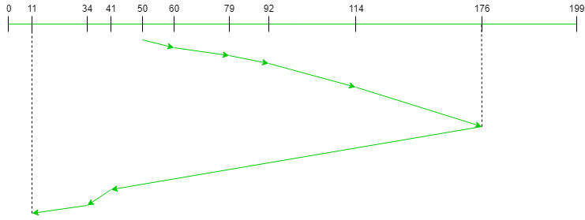

LOOK is the advanced version of SCAN (elevator) disk scheduling algorithm which gives slightly better seek time than any other algorithm in the hierarchy (FCFS->SRTF->SCAN->C-SCAN->LOOK). The LOOK algorithm services request similarly as SCAN algorithm meanwhile it also “looks” ahead as if there are more tracks that are needed to be serviced in the same direction. If there are no pending requests in the moving direction the head reverses the direction and start servicing requests in the opposite direction. The main reason behind the better performance of LOOK algorithm in comparison to SCAN is because in this algorithm the head is not allowed to move till the end of the disk.
Algorithm:
- Let Request array represents an array storing indexes of tracks that have been requested in ascending order of their time of arrival. ‘head’ is the position of disk head.
- The initial direction in which head is moving is given and it services in the same direction.
- The head services all the requests one by one in the direction head is moving.
- The head continues to move in the same direction until all the request in this direction are finished.
- While moving in this direction calculate the absolute distance of the track from the head.
- Increment the total seek count with this distance.
- Currently serviced track position now becomes the new head position.
- Go to step 5 until we reach at last request in this direction.
- If we reach where no requests are needed to be serviced in this direction reverse the direction. and go to step 3 until all tracks in request array have not been serviced.
Examples:
Input:
Request sequence = {176, 79, 34, 60, 92, 11, 41, 114}
Initial head position = 50
Direction = right (We are moving from left to right)
Output:
Initial position of head: 50
Total number of seek operations = 291
Seek Sequence is
60
79
92
114
176
41
34
11
The following chart shows the sequence in which requested tracks are serviced using LOOK.
